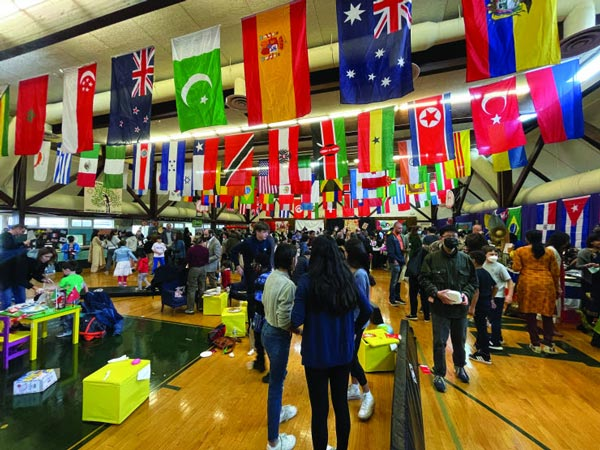

Students should feel that they have reprsentation regardless of their background or culture. ALong with a diverse faculty, the school will do outreach programs, encouraging parents, business owners, and contributing members of the local community involved. The main goal of my proposal is getting the local community more involved in their kid's learning
Our diversity and various culture is what makes America America. Culture should be celebrated with incorporating local history and culture into the cirriculum, hosting events such as culture fairs. Students should be encouraged to particapate and share their culture

It's never too early to learn compassion and patience. Start educating students mental and physical disablities at an early age. Having staff that is equiped to teach those with special needs is crucial, and having school events and extracuricular activities that are open and welcoming will allow everyone to feel that they're apart of the student body
"When children from diverse backgrounds interacted in the same
classrooms, they would find common ground, learn to respect each
other, and learn skills of getting along. Some reformers further
envisioned that educating children together would help forge a
common American culture. "
- Nancy Kober
"Schools that embrace diversity prepare students for the realities
of the multicultural workforce they will encounter in their future
careers. By learning to work collaboratively with individuals from
diverse backgrounds, students develop essential skills such as
adaptability, communication, and teamwork."
- American School of Bangkok
"It promotes a positive learning environment that values diversity
and encourages collaboration and teamwork. It also helps to develop
empathy and understanding among students, which can lead to more
inclusive and accepting communities."
- The Princeton Review